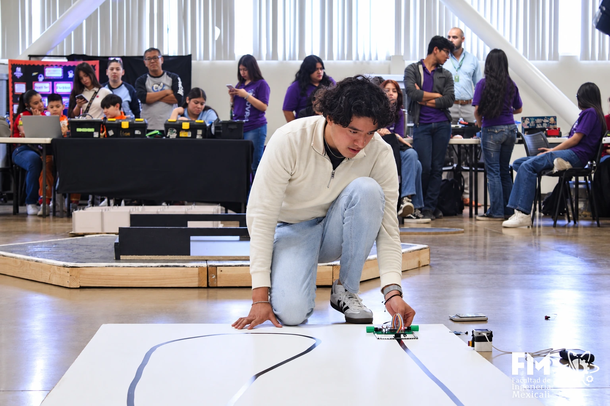
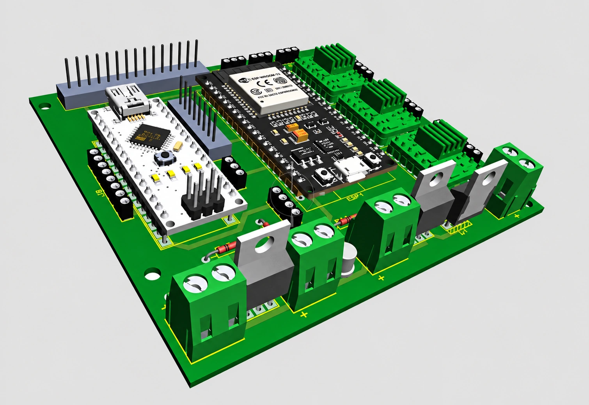

Navico Group
R&D · LCD testing, Python instrument control & prototyping.
01 / ABOUT
I’m a master’s student in Electrical Engineering at Cal State LA. My projects focus on electronics, embedded programming and robotics.
M.S. Electrical EngineeringCal State LA · Expected Dec 2027
B.S. MechatronicsCETYS University · Graduated 2025
Founding member & former president
CETYS Robotics Club · 2022–2025
Los Angeles · Open to internships
Full-time in summer / part-time during classes


02 / PROJECTS
03 / EXPERIENCE
R&D · LCD testing, Python instrument control & prototyping.
Research · Motion data & activity recognition with Python.
Technical inspection · Electrical systems, gas installations & drawings.
04 / CONTACT
aaronse513@gmail.com ↗